🧭 1. Tổng quan điểm đến
Mỗi độ thu về vào tháng 9 - 10, khắp các thung lũng La Pán Tẩn, Chế Cu Nha, Dế Xu Phình lại bừng sáng trong sắc vàng óng ả của lúa chín nương, hương thơm ngọt ngào của ngọc trời quyện trong gió núi xua tan cái lạnh vùng cao. Được Thủ tướng Chính phủ xếp hạng là Di tích Quốc gia Đặc biệt năm 2019 và được các chuyên trang du lịch quốc tế uy tín (như CN Traveler, National Geographic) vinh danh trong top những điểm đến sắc màu nhất hành tinh, Mù Cang Chải là niềm tự hào kiêu hãnh của du lịch Việt Nam.
Không chỉ có lúa vàng, Mù Cang Chải còn mê hoặc lòng người bởi đèo Khau Phạ hiểm trở quanh năm mây mù che phủ, rừng trúc Púng Luông thanh tịnh và bản sắc văn hóa ngàn đời của tiếng khèn Mông tha thiết gọi bạn tình bên sườn núi.
📜 2. Vị trí địa lý & Dấu ấn lịch sử
Huyện Mù Cang Chải nằm ở phía tây tỉnh Yên Bái, cách thủ đô Hà Nội khoảng 280km về phía tây bắc theo trục Quốc lộ 32. Địa hình huyện hiểm trở bậc nhất vùng Tây Bắc với độ cao trung bình trên 1.000m, bị chia cắt mạnh bởi các dãy núi cao của khối Hoàng Liên Sơn và thung lũng sâu của sông Nậm Kim. Khí hậu mang tính chất cận nhiệt đới gió mùa núi cao mát mẻ quanh năm, mùa đông buốt giá sương muối và mùa hè mát lành dễ chịu.
⚖️ Căn cứ Pháp lý & Quyết định Xếp hạng Di sản Chính thống
Giá trị văn hóa, lịch sử và cảnh quan kiệt tác của Ruộng bậc thang Mù Cang Chải đã được khẳng định qua hệ thống văn bản quy phạm pháp luật của Nhà nước:
- Quyết định số 1959/QĐ-TTg ngày 31/12/2019 của Thủ tướng Chính phủ: Xếp hạng Danh lam thắng cảnh Ruộng bậc thang Mù Cang Chải (thuộc các xã La Pán Tẩn, Chế Cu Nha, Dế Xu Phình, Kim Nọi, Mồ Dề, Lao Chải) là Di tích Quốc gia Đặc biệt.
- Quyết định số 41/2007/QĐ-BVHTTDL của Bộ Văn hóa, Thể thao và Du lịch: Công nhận Ruộng bậc thang Mù Cang Chải là Di tích danh lam thắng cảnh cấp quốc gia.
- Quyết định số 1407/QĐ-BVHTTDL ngày 01/06/2023 của Bộ VHTTDL: Ghi danh Nghệ thuật Khèn Mông của người Mông huyện Mù Cang Chải vào Danh mục Di sản văn hóa phi vật thể quốc gia.
- Di sản văn hóa phi vật thể quốc gia: Lễ hội Gầu Tào và Nghệ thuật vẽ hoa văn trên vải bằng sáp ong của người Mông Mù Cang Chải được ghi danh bảo tồn nghiêm ngặt.
- Quyết định số 1086/QĐ-TTg ngày 18/09/2023 của Thủ tướng Chính phủ: Phê duyệt Quy hoạch tỉnh Yên Bái thời kỳ 2021 - 2030, tầm nhìn đến năm 2050 (định vị Mù Cang Chải là trọng điểm du lịch sinh thái và văn hóa bản địa đặc sắc tầm cỡ quốc tế).
Về dấu ấn lịch sử, cách đây hơn 3 thế kỷ vào khoảng thế kỷ XVII - XVIII, những người Mông di cư đến định cư trên các triền núi cao chót vót của Mù Cang Chải. Thiếu đất bằng để cấy lúa nước, tổ tiên người Mông đã sáng tạo ra phương thức canh tác ruộng bậc thang phi thường. Với những công cụ thô sơ như cuốc bướm, xà beng và gậy chọc lỗ, họ đã san bạt từng vạt đồi, đắp bờ giữ đất, dẫn nước từ các khe suối ngàn qua hệ thống máng nứa vượt núi, tạo nên một nền văn minh nông nghiệp lúa nước trên mây độc nhất vô nhị.
⛰️ 3. Huyền thoại Đèo Khau Phạ & Truyền tích người Mông
🦅 Huyền thoại Đèo Khau Phạ: Chiếc "Sừng Trời" chọc thủng mây mù
Theo ngôn ngữ của đồng bào Thái bản địa, "Khau Phạ" có nghĩa là Sừng Trời (chiếc sừng vươn thẳng lên đỉnh trời). Tương truyền thuở khai thiên lập địa khi trời và đất còn sát nhau, ngọn núi Khau Phạ đứng sừng sững như một chiếc sừng đá khổng lồ nâng đỡ vòm trời cao vời vợi. Mỗi khi mây mù bao phủ kín thung lũng Tú Lệ, ngọn đèo vẫn vươn mình ngạo nghễ trong nắng sớm, tựa như cửa ngõ thông thiên giữa cõi trần và cõi tiên. Đây cũng là nơi các dũng sĩ Mù Cang Chải xưa kia lập căn cứ kháng Pháp hiển hách với Đội du kích Khau Phạ lưu danh trang sử vàng.
🌾 Truyền tích Hạt Thóc Thần & Nấc thang lên trời của tổ tiên
Người già ở La Pán Tẩn vẫn thường kể cho con cháu nghe tích cổ: Thuở xưa nghèo khó, tổ tiên người Mông được Giàng (Trời) ban cho những hạt thóc thần hình bầu tròn. Giàng dặn chỉ được gieo ở nơi cao nhất, nơi mây bay chạm đỉnh núi thì lúa mới kết hạt thơm dẻo. Người Mông vâng lời gùi đất lên đồi trọc, cuốc từng bậc thang men theo triền núi dốc đứng để làm đất đón nước trời. Khi lúa chín vàng ươm, chim muông kéo về hót vang rừng, hạt thóc nở to tròn thơm ngát nức tiếng, tạo nên hình ảnh Đồi Mâm Xôi — biểu tượng của sự no ấm, phồn thịnh ngàn đời.
🌺 Huyền tích Hoa Tớ Dày: Lời hẹn ước tình yêu mùa xuân
Mỗi độ đông tàn khi những cơn gió bấc buốt giá bắt đầu tan biến, khắp các vạt đồi Mù Cang Chải lại bừng nở một loài hoa rừng màu hồng thắm mang tên hoa Tớ Dày (đào rừng hoang dã). Tương truyền loài hoa này là giọt máu son và nước mắt chung tình của nàng thiếu nữ Mông ngóng chờ chàng trai đi săn thú dữ bảo vệ bản làng. Tiếng khèn Mông véo von gọi bạn tình vang vọng khắp đại ngàn khi hoa Tớ Dày bung nở, báo hiệu một mùa xuân mới tràn đầy hy vọng và ấm no đã về.
🌸 4. Chuỗi hình ảnh 4 mùa du lịch
Khác biệt với vùng đồng bằng, khí hậu núi cao Mù Cang Chải tạo nên sự luân chuyển bốn mùa ngoạn mục, đưa du khách đi từ bức tranh tráng lệ này sang kỳ quan thiên nhiên khác:
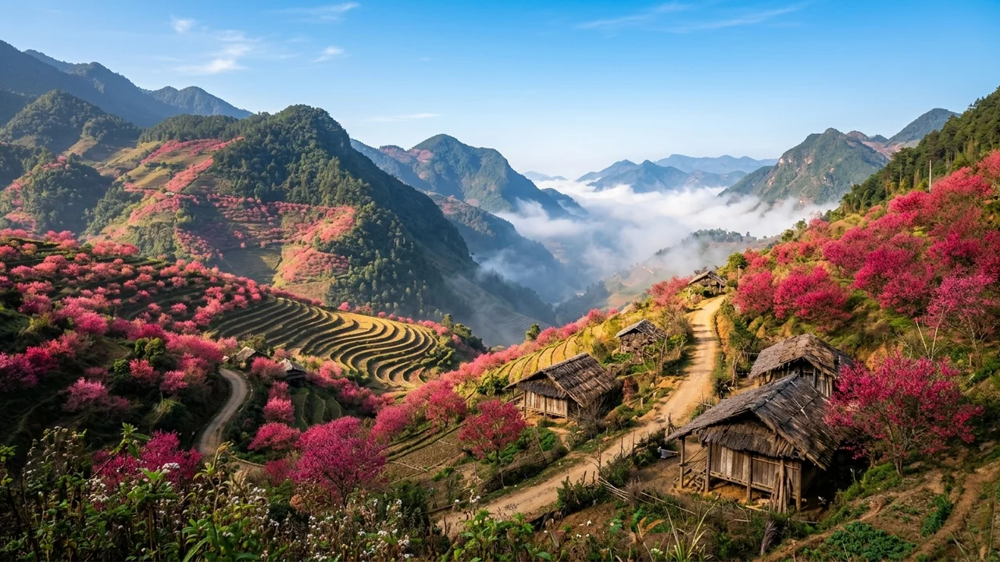
Tháng 1 - 2Mùa Xuân: Hoa Tớ Dày & Hội Gầu Tào Mùa Xuân
Thời điểm: Tháng 1 đến hết tháng 2 Dương lịchTiết trời mùa xuân se lạnh, nắng ấm chan hòa. Cả rẻo cao bừng sáng trong sắc hồng thắm của hoa đào rừng, tiếng cười rộn rã của thiếu nữ Mông xúng xính váy hoa dạo hội Gầu Tào cầu may mắn đầu năm.
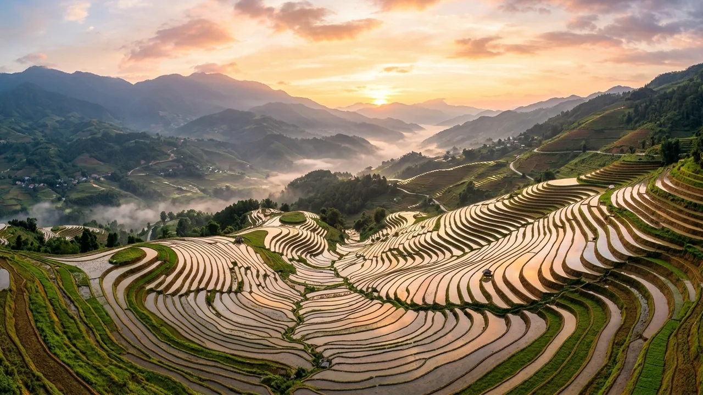
Tháng 5 - 6Mùa Hạ: Mùa Nước Đổ & Ngàn Tấm Gương Phản Chiếu
Thời điểm: Tháng 5 đến hết tháng 6 Dương lịchMùa đổ ải cấy lúa là mùa nghệ thuật nhiếp ảnh thăng hoa. Nước từ đỉnh núi chảy tràn qua từng bậc thang uốn lượn, hòa quyện cùng màu nâu của phù sa, màu xanh của mạ non và sắc trời lấp lánh đẹp ngỡ ngàng.
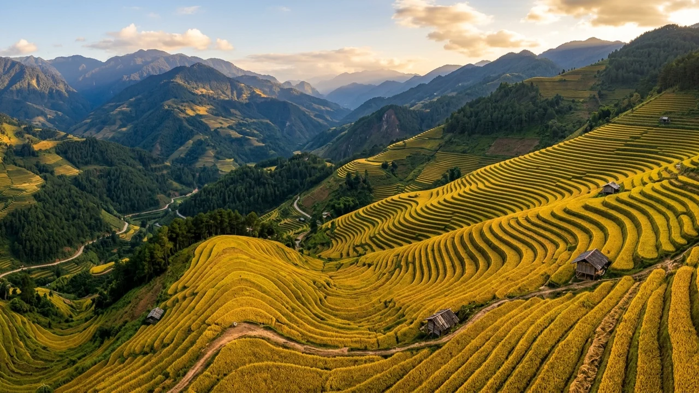
Tháng 9 - 10Mùa Thu: Mùa Vàng Lúa Chín & Lễ Hội Dù Lượn
Thời điểm: Tháng 9 đến hết tháng 10 Dương lịchĐỉnh cao mùa du lịch Tây Bắc. Trải nghiệm bay dù lượn "Bay trên mùa vàng" từ đỉnh đèo Khau Phạ ngắm toàn cảnh thung lũng lúa chín vàng rực rỡ và đồi Mâm Xôi, đồi Móng Ngựa kiệt tác nghẹt thở.
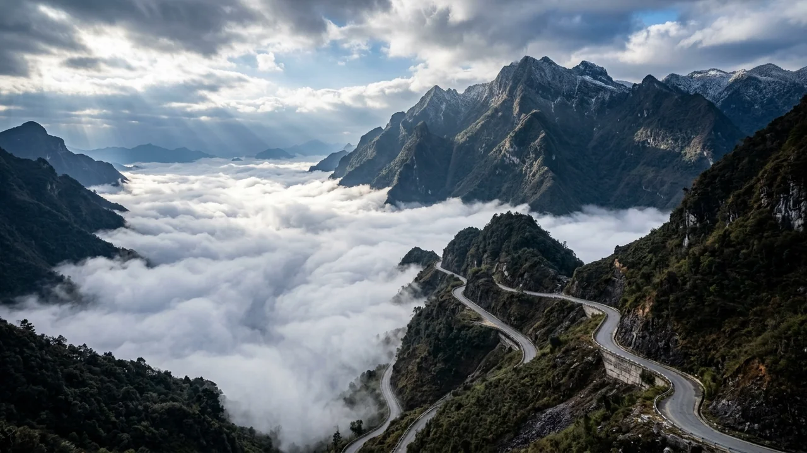
Tháng 11 - 12Mùa Đông: Biển Mây Đèo Khau Phạ & Lửa Ấm Vùng Cao
Thời điểm: Tháng 11 đến hết tháng 12 Dương lịchTiết trời buốt giá, là thời điểm lý tưởng cho các phượt thủ săn mây trên đỉnh Khau Phạ, quây quần bên bếp lửa hồng thưởng thức lẩu gà đen nghi ngút khói và nhấp chén rượu ngô cay nồng ấm bụng.
🏞️ 5. Top 10 Thắng cảnh biểu tượng & Dấu tích lịch sử
Khám phá 10 danh thắng kiệt tác định hình nên thương hiệu du lịch huyền thoại của vùng đất Mù Cang Chải:
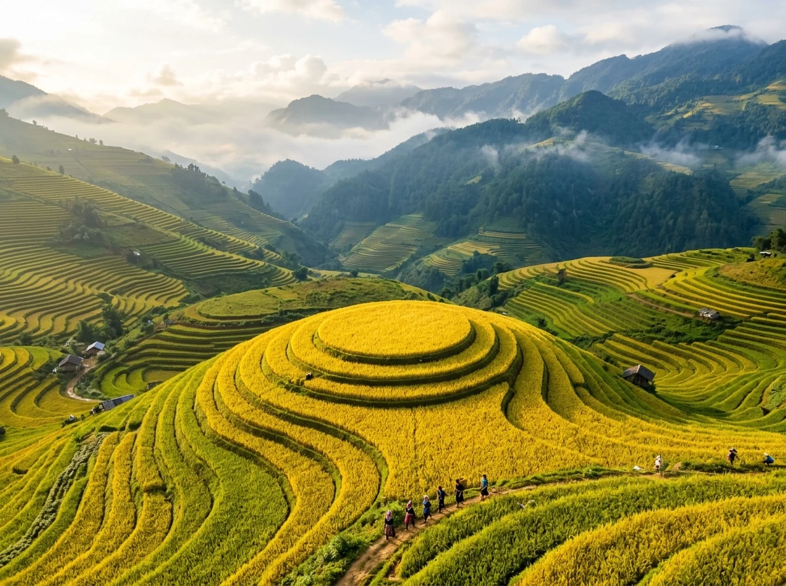
1. Đồi Mâm Xôi La Pán Tẩn — Kiệt Tác Tròn Đầy Đất Trời
Ngọn đồi ruộng bậc thang hình mâm xôi huyền thoại, biểu tượng trường tồn của sự no ấm và tài hoa nông nghiệp người Mông.
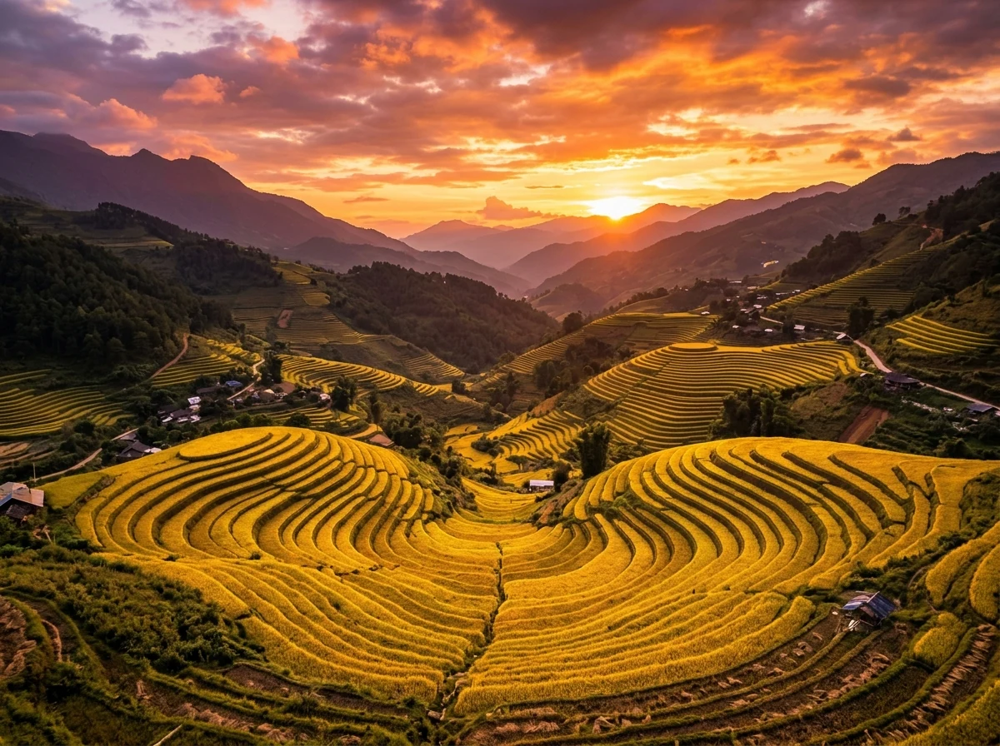
2. Đồi Móng Ngựa Sáng Nhù — Cung Vàng Đón Ánh Chiều Tà
Đường cong bán nguyệt hoàn mỹ giữa lưng chừng trời, nơi ngắm hoàng hôn dát vàng kỳ vĩ nhất Tây Bắc.
3. Đèo Khau Phạ
Cung đèo hiểm trở vượt "Sừng Trời", nơi những cánh dù lượn rực rỡ chao liệng giữa biển mây và thung lũng vàng.
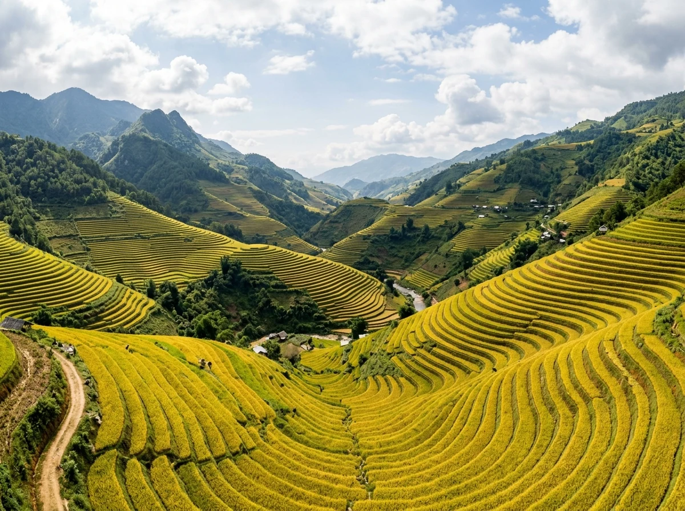
4. Ruộng Bậc Thang Chế Cu Nha
Những bậc thang dốc đứng cheo leo nối từ thung lũng sâu vươn thẳng lên đỉnh trời bao la.
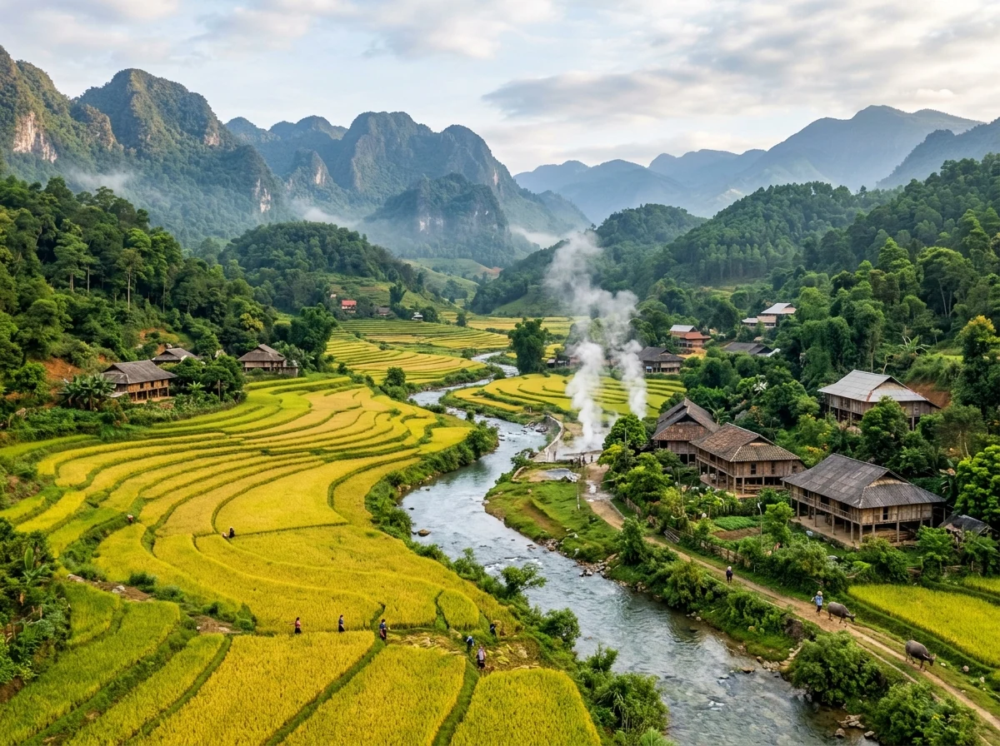
5. Thung Lũng Tú Lệ
Xứ sở của hạt ngọc nếp nương dẻo quánh và những dòng suối nước nóng tự nhiên nuôi dưỡng làn da trắng ngần.
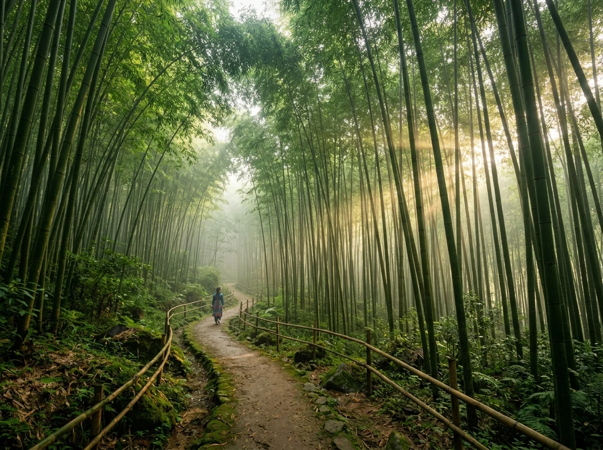
6. Rừng Trúc Púng Luông
Rừng trúc bạt ngàn xanh ngắt tĩnh mịch, điểm check-in độc đáo như bước ra từ thế giới điện ảnh.
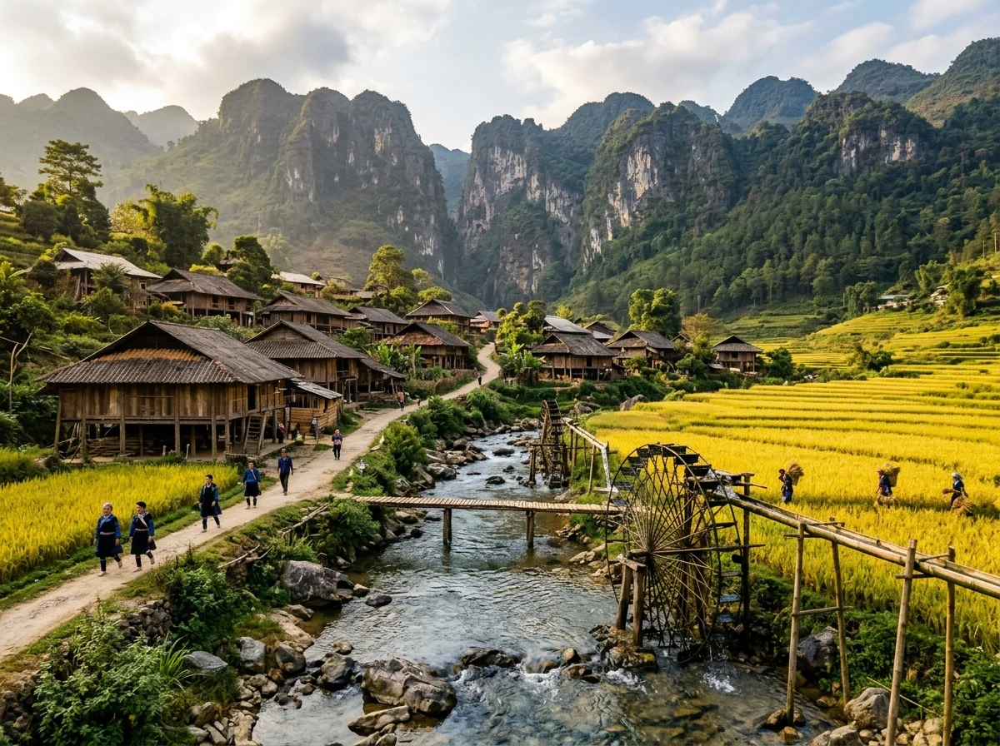
7. Bản Lìm Mông & Lìm Thái
Bức tranh làng quê thanh bình mộc mạc bên suối róc rách dưới chân vách đá sừng sững của đèo Khau Phạ.
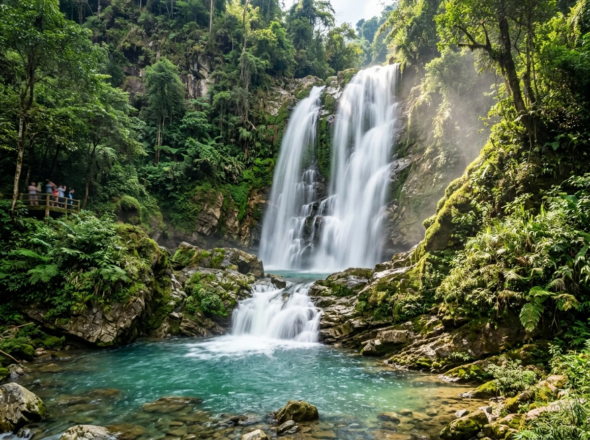
8. Thác Pú Nhu
Dòng thác bạc mát lành tuôn trào giữa lòng núi đá, điểm dừng chân thư thái xua tan mệt mỏi hành trình.
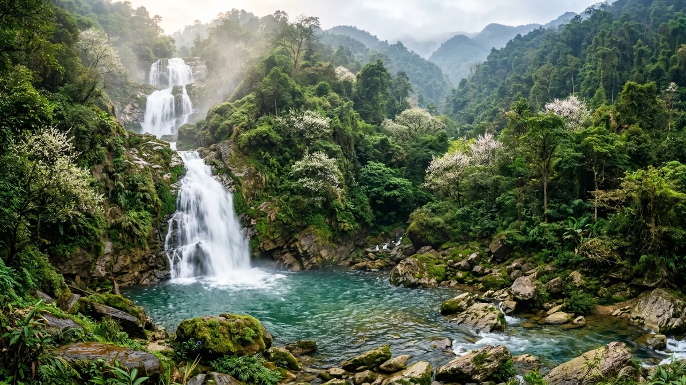
9. Thác Mơ Mù Cang Chải
Kiệt tác thác nước bốn tầng mềm mại uốn lượn giữa cánh rừng nguyên sinh rực rỡ sắc hoa rừng.
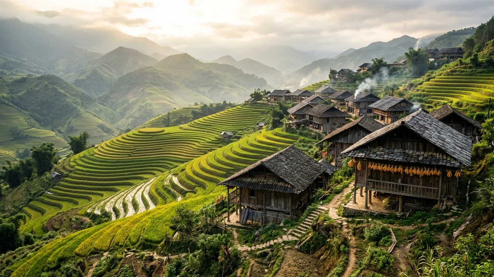
10. Bản Làng H'Mông La Pán Tẩn
Không gian sống mộc mạc thanh bình trên lưng chừng trời, nơi cất giữ hồn cốt văn hóa dệt lanh khèn Mông.
🚗 6. Cẩm nang di chuyển & Cung đường giao thông
Hành trình từ Hà Nội lên Mù Cang Chải là một trong những cung đường phượt đẹp nhất vùng Tây Bắc qua những cánh đồng Mường Lò và đèo Khau Phạ huyền thoại:
| Phương tiện | Lộ trình chi tiết | Thời gian | Giá vé tham khảo | Kinh nghiệm & Lưu ý |
|---|---|---|---|---|
| Xe Limousine / Xe khách | Hà Nội (Mỹ Đình) → Cao tốc Nội Bài - Lào Cai → IC12 → Nghĩa Lộ → Mù Cang Chải | 6 – 7 giờ | 250.000 – 350.000đ/vé | Các nhà xe uy tín: Cường Lan, Anh Khang, Nam Thắng. Đón trả tận nơi tại thị trấn Mù Cang Chải và các homestay La Pán Tẩn. |
| Xe máy / Ô tô tự lái | Hà Nội → Sơn Tây → Cầu Trung Hà → Thanh Sơn → Nghĩa Lộ → QL32 → Khau Phạ | 7 – 8 giờ (280km) | Xăng xe ~ 250.000đ | Cung đường ngắm cảnh tuyệt đỉnh nhưng đèo Khau Phạ cua dốc hiểm trở, đòi hỏi tay lái vững, kiểm tra phanh và đèn sương mù. |
| Thuê xe máy tại Mù Cang Chải | Thuê tại thị trấn để đi đồi Mâm Xôi, Móng Ngựa, Chế Cu Nha | Tự do | 150.000 – 200.000đ/ngày | Nên thuê xe số khỏe (Wave, Sirius) để leo dốc; đường lên Mâm Xôi và Móng Ngựa dốc đứng nên thuê xe ôm bản địa lái sẽ an toàn hơn. |
🍱 7. Tinh hoa ẩm thực đặc sản Mù Cang Chải
Ẩm thực Mù Cang Chải thấm đượm phong vị núi rừng Tây Bắc, nổi danh với hạt nếp thơm Tú Lệ và các món nướng than hoa thơm lừng gia vị mắc khén, hạt dổi:
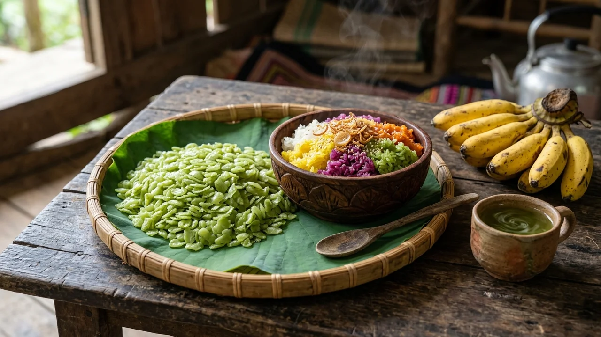
1. Cốm & Xôi Nếp Nương Tú Lệ
Hạt ngọc trời ban trứ danh thung lũng Tú Lệ. Hạt cốm xanh mướt dẻo quánh thơm nức hương sữa lúa non quyện cùng xôi nếp nương ngũ sắc bùi béo đậm đà.
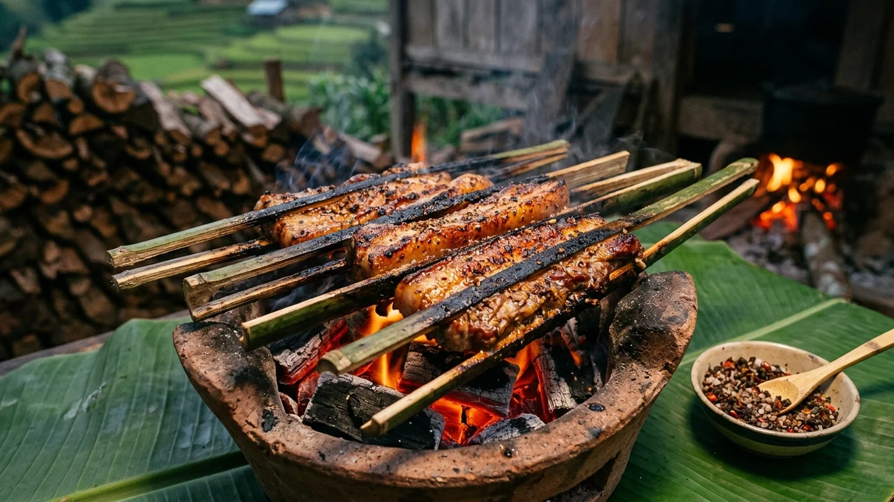
2. Thịt Lợn Bản Kẹp Thanh Tre Nướng
Thịt lợn đen thả rông nướng than hoa kẹp que tre tươi thơm lừng vị mắc khén hạt dổi, bì giòn rụm chấm chẩm chéo cay tê tái.
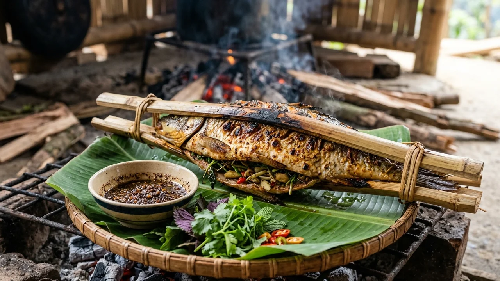
3. Pa Pỉnh Tộp (Cá Suối Nướng)
Món cá suối mổ lưng ướp thảo mộc nướng than hồng đỉnh cao của người Thái, thịt cá ngọt béo quyện vị cay nồng thơm lừng khó quên.
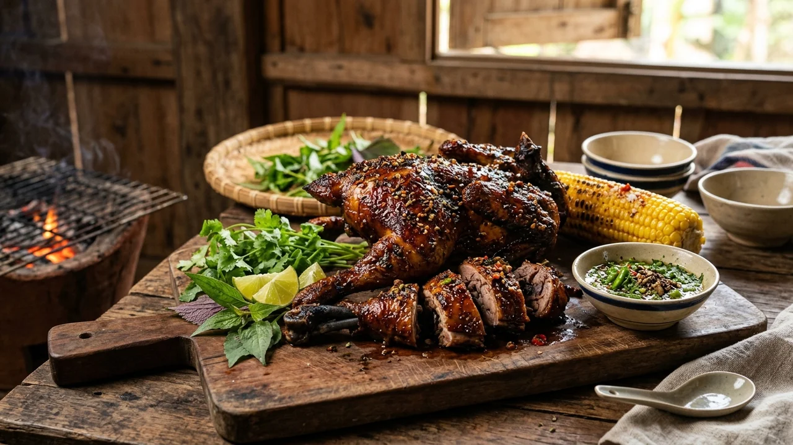
4. Gà Đen H'Mông Nướng Mật Ong Rừng
Gà đen quý hiếm nướng mật ong rừng vàng ruộm thơm lừng, thịt dai ngọt đậm đà giàu dinh dưỡng chấm muối ớt rừng.
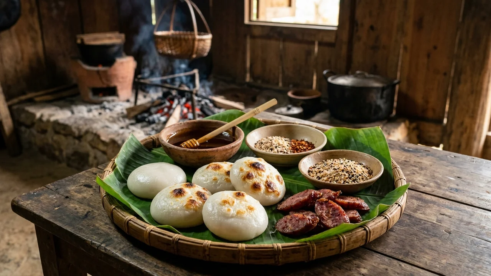
5. Bánh Giầy Giã Tay Người Mông
Món bánh truyền thống giã tay thủ công dẻo mịn nướng than hồng thơm phức, kẹp giò lụa bản hoặc chấm mật ong rừng nguyên chất bùi ngậy.
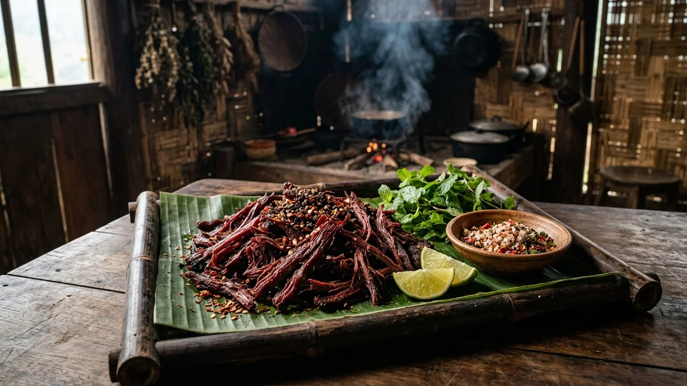
6. Thịt Trâu Gác Bếp Hun Khói
Đặc sản trứ danh vùng cao. Thịt bắp trâu đậm đà mùi khói củi nhãn, xé sợi đỏ au ngọt đậm chấm chẩm chéo cay tê nhâm nhi chén rượu ngô ấm nồng.
🎫 8. Bảng giá vé tham quan & Dịch vụ niêm yết
Bảng giá vé tham quan danh lam thắng cảnh và dịch vụ vận chuyển bản địa tại Mù Cang Chải được niêm yết theo quy định của Ban Quản lý Di tích huyện:
| Điểm tham quan / Dịch vụ | Nội dung chi tiết | Giá vé niêm yết | Ghi chú & Kinh nghiệm |
|---|---|---|---|
| Vé tham quan Di tích Ruộng bậc thang | Vé danh lam thắng cảnh La Pán Tẩn, Chế Cu Nha, Dế Xu Phình | 20.000 – 30.000đ/người | Thu tại các chốt vé vào điểm ngắm cảnh; trẻ em dưới 1.2m miễn phí. |
| Xe ôm bản địa lên Đồi Mâm Xôi | Xe máy tay lái lụa vượt dốc đứng lên tận đồi (khứ hồi) | 80.000 – 100.000đ/người | Dốc rất đứng và trơn trượt, du khách không nên tự lái xe máy nếu không quen đường dốc núi. |
| Xe ôm bản địa lên Đồi Móng Ngựa | Xe máy chở lên đồi đón hoàng hôn Sáng Nhù (khứ hồi) | 100.000 – 120.000đ/người | Đoạn đường dốc cua gấp khúc cheo leo, đội xe ôm người Mông phục vụ nhiệt tình và chuyên nghiệp. |
| Vé tham quan Rừng Trúc Púng Luông | Vé vào cửa chụp ảnh rừng trúc Nà Háng Tủa Chử | 15.000 – 20.000đ/người | Xe ôm từ đường lớn vào rừng trúc: 50.000đ/khứ hồi. |
| Bay dù lượn đèo Khau Phạ (Mùa lúa chín) | Bay dù đôi cùng phi công chuyên nghiệp ngắm thung lũng lúa vàng | 2.190.000 – 2.590.000đ/lượt | Bao gồm thiết bị bay, quay phim GoPro full HD và bảo hiểm du lịch. Cần đăng ký trước qua CLB VietWings. |
🗺️ 9. Gợi ý lịch trình 3N2Đ & Mẹo phượt đèo an toàn
🌾 Gợi Ý Lịch Trình 3 Ngày 2 Đêm (3N2Đ) Săn Mùa Vàng Trọn Vẹn
- Ngày 1: Hà Nội → Thanh Sơn → Thung lũng Tú Lệ → Chinh phục Đèo Khau Phạ → Mù Cang Chải
• 06:00: Xuất phát từ Hà Nội theo Quốc lộ 32 qua đồi chè Thanh Sơn, dừng chân thị xã Nghĩa Lộ ăn trưa.
• 13:30: Đến thung lũng Tú Lệ, thưởng thức cốm tươi mới giã và ngắm cánh đồng lúa thung lũng.
• 15:00: Vượt đèo Khau Phạ hùng vĩ ngắm dù lượn chao liệng trên không trung và thung lũng Lìm Mông dưới chân đèo.
• 17:30: Nhận phòng homestay tại La Pán Tẩn hoặc thị trấn, thưởng thức thịt lợn kẹp tre nướng và gà đen H'Mông. - Ngày 2: Đồi Mâm Xôi La Pán Tẩn → Rừng trúc Púng Luông → Hoàng hôn Đồi Móng Ngựa
• 06:30: Dậy sớm đón bình minh tuyệt mỹ tại Đồi Mâm Xôi khi nắng vàng chiếu xuyên qua sương sớm lung linh.
• 10:00: Khám phá rừng trúc Púng Luông xanh mướt, chụp những bộ ảnh phong cách kiếm hiệp cổ trang.
• 15:30: Di chuyển lên Đồi Móng Ngựa Sáng Nhù xí góc máy đẹp nhất chờ đón khoảnh khắc hoàng hôn dát vàng cung ruộng bán nguyệt.
• 19:30: Giao lưu văn nghệ lửa trại cùng đồng bào Mông, lắng nghe tiếng khèn gọi bạn rộn ràng. - Ngày 3: Ruộng bậc thang Chế Cu Nha → Bản Lìm Mông → Mua cốm Tú Lệ về Hà Nội
• Sáng: Chiêm ngưỡng những thửa ruộng dốc đứng ngoạn mục Chế Cu Nha, ghé bản Lìm Mông tắm suối mát.
• Trưa: Ăn trưa tại Tú Lệ với cá suối pa pỉnh tộp và xôi nếp nương, mua cốm nếp, thịt trâu gác bếp về làm quà.
• Chiều: Lên xe khởi hành về lại Hà Nội, kết thúc chuyến săn mùa vàng mãn nhãn và đầy ắp kỷ niệm.
💡 Mẹo Bản Địa Tránh Lạc Đường & Quy Tắc Ứng Xử Văn Minh
- Thời điểm lúa chín đẹp nhất: Tuần cuối tháng 9 đến giữa tháng 10 hàng năm. Hãy theo dõi các hội nhóm phượt bản địa để cập nhật chính xác xã nào đang chín vàng rực rỡ nhất trước khi đi.
- Tôn trọng hoa màu bà con: Tuyệt đối không dẫm đạp lên lúa, không bẻ lúa hay vứt rác ni-lông bừa bãi trên các thửa ruộng bậc thang. Đây là mồ hôi nước mắt cả năm của đồng bào.
- Ứng xử với trẻ em vùng cao: Không cho tiền mặt trực tiếp cho trẻ em trên đường để tránh tạo thói quen bỏ học xin tiền; hãy tặng sách vở, bánh kẹo hoặc quần áo ấm.
- Kỹ năng lái xe đường đèo: Luôn đi đúng làn đường, về số thấp khi xuống dốc đèo Khau Phạ, không rà phanh liên tục gây cháy phanh mất kiểm soát.